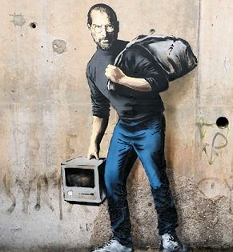

The Son of a Migrant from Syria
Banksy · 2015 · Stencilled mural
In copyright. Look and learn: shown for study, not for download.
Banksy painted this in December 2015 in the camp near Calais known as the Jungle, where migrants lived while trying to reach Britain; he had already given pieces of his Dismaland show to build shelters there. The figure is Steve Jobs, whose biological father was a student from Homs in Syria, taken from a 2006 photograph by Albert Watson. The city of Calais put glass panels over it, and in January 2016 vandals smashed the glass and sprayed over the mural.